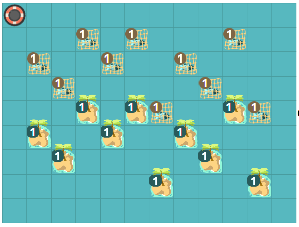

Fische ausliefern

Programmiere den Roboter:
Der Roboter soll den Fisch  nehmen und auf der Insel
nehmen und auf der Insel  abliefern.
abliefern.
Hinweis: Der Fisch ist 3 Schritte vom Roboter entfernt und die Insel 10.
Der Roboter soll den Fisch nehmen und auf der Insel abliefern.
Der Fisch befindet sich immer links von der Insel.
Hinweis: Die Insel ist 10 Schritte vom Roboter entfernt.
Beachte: Dein Programm muss mit allen Testfällen zurechtkommen.
Der Roboter soll den Fisch nehmen und auf der Insel abliefern. Dabei muss er genau einem Riff ausweichen. Fisch und Riff befinden sich immer links von der Insel.
Hinweis: Die Insel ist 10 Schritte vom Roboter entfernt.
Beachte: Dein Programm muss mit allen Testfällen zurechtkommen.